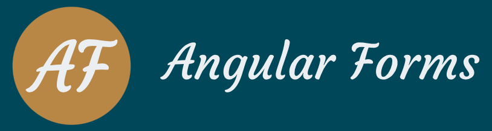

<mat-toolbar class="mat-elevation-z8">
    
    <a class="nav-link" routerLink="" routerLinkActive="active"
        [routerLinkActiveOptions]="{exact: true}">Template-Driven Forms</a>
    <a class="nav-link" routerLink="reactive-forms" routerLinkActive="active">Reactive Forms</a>
</mat-toolbar>